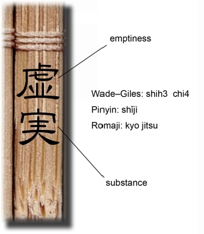

| The Art of War: 英語で読む孫子兵法6 虚実 | |
| 田中淳璽 | |
| KFF Publishing (2015) | |
英語で読む孫子兵法
第6 編「虚実」
Sun Tzu
Lionel Giles
"The Art of War"
Part 6
"WEAK POINTS AND STRONG"

VI. WEAK POINTS AND STRONG CONTENTS
【強みと弱みについて】原文：孫子曰く、およそ先に戦地に処（お）りて敵を待つ者は佚（いっ）し
【相手を意のままにすることとは】原文：ゆえに善く戦う者は、人を致（いた）して人に致（いた）されず。
【利害で誘う】原文：よく敵人をしてみずから至（いた）らしむるは、これを利すればなり。
【敵を動かす】原文：ゆえに敵佚すればよくこれを労し、飽けばよくこれを饑（う）えしめ、安ければよくこれを動かす。
【弱みを攻める、意表を突く】原文：その必ず趨（おもむ）く所に出で、その意（おも）わざる所に趨き
【無人の境を行けば疲れない】原文：千里を行（ゆ）いて労（つか）れざるは、無人の地を行けばなり。
【攻守無敵であるには】原文：攻めて必ず取るは、その守らざる所を攻むればなり。
【知られないこと】原文：ゆえに善く攻むる者には、敵、その守る所を知らず。善く守る者には、敵、その攻むる所を知らず。
【無形について】原文：微なるかな微なるかな、無形に至る。神なるかな神なるかな、無声に至る。ゆえによく敵の司命をなす。
【究極の攻めについて】原文：ゆえにわれ戦わんと欲すれば、敵、塁（るい）を高くし溝（こう）を深くすといえども
【究極の守りについて】原文：われ戦いを欲せざれば、地を画（かく）してこれを守るも、敵、われと戦うを得（え）ざるは
【虚実による数的優位について】原文：ゆえに人を形せしめてわれに形なければ、すなわちわれは専（あつ）まりて敵は分かる。
【数的優位をとること】原文：寡（すくな）きは人に備うるものなり。衆（おお）き者は人をしておのれに備えしむるものなり。
【虚実を知ればどんな会戦もできる】原文：ゆえに戦いの地を知り、戦いの日を知れば、すなわち千里にして会戦すべし。
【虚実を知らなければ全く会戦不能】原文：戦いの地を知らず、戦いの日を知らざれば、すなわち左は右を救うことあたわず
【当時の呉越戦争について孫武の持論について】原文：われをもってこれを度（はか）るに、越人の兵は多しといえども
【究極の無形】原文：ゆえに兵を形（あらわ）すの極は、無形に至る。
【勝利は庶民の目には見えても、理解できないもの】原文：形に因（よ）りて勝を衆に錯（お）くも、衆は知ることあたわず。
原文：人みなわが勝つゆえんの形を知るも、わが勝を制するゆえんの形を知ることなし。
【二度と同じ兵法は繰り返されず、そして無限に尽きない】原文：ゆえにその戦い勝つや復（くりかえ）さずして、形に無窮に応ず。
【兵は水のようである】原文：それ兵の形は水に象（かたど）る。水の形は高きを避けて下（ひく）きに趨（おもむ）く。
【水流と兵法の共通点】原文：水は地に因（よ）りて流れを制し、兵は敵に因りて勝ちを制す。
【神算鬼謀の者とは】原文：よく敵に因りて変化して勝を取る者、これを神と謂う。
【陰陽五行との比較】原文：ゆえに五行に常勝なく、四時（しじ）に常位（じょうい）なく、日に短長あり、月に死生あり。
直訳：強みと弱み
fres h 生き生きした 作り立ての 塗り立ての さわやか
hasten to d o 取りあえず〇〇する 急いで〇〇する
原文：孫子曰く、およそ先に戦地に処（お）りて敵を待つ者は佚（いっ）し、後（おく）れて戦地に処りて戦いに趨（おもむ）く者は労す。
直訳：孫子は言う。戦場に一番乗りして敵が来るのを待つ者は、戦いに備えて元気だが、先を越されて戦場に到着し急いで戦わねばならない者は、つかれきっている。
combatan t 戦闘員
impos e 押し付ける
wil l 意志 意向
原文：ゆえに善く戦う者は、人を致（いた）して人に致（いた）されず。
直訳：だからゆえに、賢い戦士は、相手を意のままにするが、相手の意のままにはさせない。
ownaccor d 自発的
inflic t 負わせる 課す
dra w やってくる 近づく 寄り集まる
原文：よく敵人をしてみずから至（いた）らしむるは、これを利すればなり。よく敵人をして至るを得ざらしむるは、これを害すればなり。
直訳：敵に利益を与えることにより、敵に自発的に進ませることができる。あるいは、敵に損害を負わせることにより、敵が近づけないようにすることができる。
take one's eas e 休む 寛ぐ
haras s 悩ませる 苦しめる うるさがらせる
starv e 飢える ひもじい思いをする
quietl y 静かに 平穏に 落ち着いて 地味に 内密に
原文：ゆえに敵佚すればよくこれを労し、飽けばよくこれを饑（う）えしめ、安ければよくこれを動かす。
直訳：敵が休んでいるならばこれを悩ませ、敵の食料が十分補われている時はこれをひもじくさせ、敵が落ち着いて布陣している所を動かざる得なくすることができる。
swiftl y 迅速に
原文：その必ず趨（おもむ）く所に出で、その意（おも）わざる所に趨き
直訳：敵が急遽守備に追われる地点に出現せよ。敵が予想だにしない場所に素早く進め。
distres s 苦痛 困窮 悩みの種
原文：千里を行（ゆ）いて労（つか）れざるは、無人の地を行けばなり。
直訳：軍が苦も無く長距離を進めるのは、無人の境を行けばこそである。
ensur e 確実にする 確保する 保証する 守る
hold positio n 陣地を固く守る 布陣を保つ
原文：攻めて必ず取るは、その守らざる所を攻むればなり。守りて必ず固きは、その攻めざる所を守ればなり。
直訳：ただ守られていない場所を攻めれば、攻撃の成功を確かにできる。攻めることができない陣地を保ちさえすれば、守備の安全を確保できる。
原文：ゆえに善く攻むる者には、敵、その守る所を知らず。善く守る者には、敵、その攻むる所を知らず。
直訳：よって攻撃が巧みな将にかかれば、敵は何を守るかわからず、守備が巧みな将には、何を攻めれば良いかわからない。
O ああ！ おお！
divin e 神の
subtlet y 微妙
secrec y 秘密
learn t o 成る
henc e このゆえに 今後
原文：微なるかな微なるかな、無形に至る。神なるかな神なるかな、無声に至る。ゆえによく敵の司命をなす。
直訳：ああ！機微と機密の法よ、神性なり。汝により我らの姿は見えなく成り、聞こえなくなる。そしてこのゆえに我らは敵の運命をこの手に握ることができるのである。
irresistibl e 抵抗できない
pursui t 追撃 追及
rapi d 速い 迅速な 敏速な
原文：進みて禦（ふせ）ぐべからざるは、その虚を衝（つ）けばなり。退きて追うべからざるは、速かにして及ぶべからざればなり。
直訳：進んで、完全に抵抗不可能であるのは、敵の弱みに向かうからである。退いて、追っ手から無事であるのは、敵よりも敏速に動くからである。
rampar t 塁壁 城壁 守備
ditc h 排水溝 溝渠 お堀 水面に不時着すること
be obliged t o 〇〇することを余儀なくされる
reliev e 苦痛を取り除く 危機から救出する
原文：ゆえにわれ戦わんと欲すれば、敵、塁（るい）を高くし溝（こう）を深くすといえども、われと戦わざるを得（え）ざるは、その必ず救う所を攻（せ）むればなり。
直訳：こちらが戦いたいと思えば、敵は、たとえ高い城壁や深い堀の内に守られていても交戦を強いられる。あちらの必ず救わなくてはならなくなる他の場所を攻撃するだけでよいからである。
trac e 線を引く 見取り図を描く なぞる
preven t ～ from doin g 防ぐ 妨げる
od d 変な 妙な 思いがけない 乖離した
unaccountabl e 説明できない わけのわからない 奇妙な
原文：われ戦いを欲せざれば、地を画（かく）してこれを守るも、敵、われと戦うを得（え）ざるは、その之（ゆ）く所に乖（たが）うればなり。
直訳：こちらが戦いたくないと思うのならば、たとえ地面に線を引いただけの陣でも、敵がこちらと交戦するのを妨げることができる。あちらの進路上に奇妙で思いがけない何かを投入するだけでよいからである。
dispositio n 配置 配備 作戦計画
force s 軍 兵
原文：ゆえに人を形せしめてわれに形なければ、すなわちわれは専（あつ）まりて敵は分かる。
直訳：敵の配備を悟り、こちらは見えないままでいることによって、敵は軍を分けねばならないと同時に、こちらは力を集中させておけるのである。
fraction(s ) 破片 小部分 わずかな量の
pitte d 凹陣形（鶴翼）
原文：われは専（あつ）まりて一となり、敵は分かれて十とならば、これ十をもってその一を攻むるなり。すなわちわれは衆（おお）くして敵は寡（すくな）し。
直訳：敵は細かく分かれねばならない状況で味方は一丸となることができる。このゆえに、全軍対小分隊になる。つまり、少ない敵に対し味方は多くなることを意味する。
※ pitte d は本来「種を抜いた」という意味で 、 'pitted olive ' （種抜きオリーブの実）の瓶詰などが一般には馴染み深い。
inferio r 劣った
superio r 優った
dir e おそろしい 悲惨な
in strait s 困難にある 難局にある 窮境にある
原文：よく衆（しゅう）をもって寡（か）を撃たば、すなわちわれの与（とも）に戦うところの者は約（やく）なり。
直訳：そして、このように優勢でもって劣勢にあたれば、敵はおそろしく難しい状況に陥ることであろう。
proportionatel y 比例して
原文：われの与に戦うところの地は知るべからず。知るべからざれば、すなわち敵の備うるところの者多し。敵の備うるところの者多ければ、すなわちわれのともに戦うところの者は寡し。
直訳：こちらが戦おうとしている場所は、知られてはならない。そうすれば、敵はあり得るべき攻撃に対して、複数箇所で準備しなくてはならなくなるからである。そして、敵の勢力があちこちの方面に分けられているから、味方がどこか目的とする地で出会う敵の数は準じて少なくなるのである。
va n 前
rea r 後ろ
原文：ゆえに前に備うればすなわち後ろ寡（すくな）く、後に備うればすなわち前寡く、左に備うればすなわち右寡く、右に備うればすなわち左寡く、備えざるところなければすなわち寡からざるところなし。
直訳：だから、敵が前の備えを厚くすれば、後ろが弱くなり、後ろを強化すれば、前が弱くなり、左を強くすれば右が弱まり、右を強めれば左を弱めることになる。もし全部に援軍を送れば、どこもかしこも弱くなる。
numerica l 数的な 数字で表した
compe l 強いる
adversar y 敵
原文：寡（すくな）きは人に備うるものなり。衆（おお）き者は人をしておのれに備えしむるものなり。
直訳：数的な不利は、ありそうな攻撃に対して準備せねばならないことから来る。数的優位は、敵にこれらの準備を強いることから来る。
原文：ゆえに戦いの地を知り、戦いの日を知れば、すなわち千里にして会戦すべし。
直訳：戦いの地と時を知っていれば、どんなに遠く離れたところからでも兵を集め戦ってよいのである。
impoten t 無力な 能力がなくて
succo r 救援する 援助する
how much mor e いわんや
直訳：しかし、場所も時も知らないなら、左翼は右翼を救援する力が無く、右も同じく左を救援する力が無く、前は後ろを救えず、あるいは、後ろが前を支えることもできない。いわんや、最も遠い部隊は最大 で 10 0 里向こう、最も近いものでも数里も離れていたら、救えるはずがない！
advantag e 利する
原文：われをもってこれを度（はか）るに、越人の兵は多しといえども、またなんぞ勝敗に益せんや。ゆえに曰く、勝はなすべきなり。
直訳：私の推計では越軍はこちらを数で上回りますが、それは、勝ち負けの問題においては、彼らを利することはないでしょう。だから言います。勝つことができます。
※『孫子』全編を通じて、孫武本人が「孫子曰く」以外で、当時の国際情勢を踏まえた具体的意見を述べる部分は珍しい。他の箇所とは少し語調を変えて訳した。
schem e 策動する
so as to d o 〇〇するために
likelihood o f ～ 〇〇の可能性
原文：敵は衆（おお）しといえども、闘うことなからしむべし。 ゆえにこれを策（はか）りて得失の計を知り
直訳：敵が数で勝っていても、こちらは戦わせないようにすることができる。あちらの計画と成功の可能性を知るために策動せよ。
※ thoug h 以下の文では 、 ma y が省略されている。
Though the enemy (may) be stronger in numbers, we may ...
rous e 目覚めさせる 奮起させる かき立てる
principle o f ～ 〇〇の根本的な行動方針
activit y 活動 活発
inactivit y 無活動 不活発
reveal onesel f 正体を表す 本性を示す
vulnerabl e 脆い 脆弱な すきだらけで 攻撃されやすい
原文：これを作（おこ）して動静の理を知り、これを形（あらわ）して死生の地を知り
直訳：敵を刺激すれば、あちらの動や静の活動方針を知るであろう。攻撃に弱い箇所を見つけ出すために、あちらに正体を現せさせよ。
superabundan t 有り余る
deficien t 不足している
直訳：敵軍と自軍を慎重に比較せよ。そうすれば、どこに力が有り余っているのか、またどこに不足しているかを知ることができる。
tactica l 戦術的な 用兵上の
dispositio n 性質 傾向 軍の配置 軍の配備 作戦計画
pitc h 程度 勾配 ピッチング サッカーのピッチ
attai n 達成する 到達する
concea l すっかり隠す 秘密にする
pr y 詮索する のぞきこむ
subtles t とらえがたい 微細な 敏感な 巧妙な 薄い
machinatio n 陰謀
the brain s ブレーン
原文：ゆえに兵を形（あらわ）すの極は、無形に至る。無形なれば、すなわち深間（しんかん）も窺（うかが）うことあたわず、智者も謀ることあたわず。
直訳：戦術的な軍形や作戦計画を練る時に、到達し得る最高の水準はそれらを見えなくしてしまう事である。作戦を不可視にすれば、最も巧妙なスパイたちの詮索を免れ、最も賢い智謀者たちの陰謀からも安全であろう。
the multitud e 大衆 庶民
comprehen d 理解する
原文：形に因（よ）りて勝を衆に錯（お）くも、衆は知ることあたわず。
直訳：敵固有の戦術からどのように彼らの勝利が生み出されるのかは、一般には理解できないことである。
※原文は「錯勝於衆、衆不能知」と、「衆」を二度繰り返す。日本における孫子解釈には、この部分重複と推測され、削られているものが多い 。 Gile s は、前後 を - - で二文に分け、それぞれの中で「衆」 を 'them 'と 'the multitude ' という形で残している。この訳出技法は、後世振り返った時 に Gile s 孫子の元本が『宋本十一家孫子』など、「衆」が二度出る文献だったことを判じ易くし、よっ て Gile s 孫子の科学性を高めている。尤も、アカデミックな英文においても重複は ' redundanc y 'として嫌われる。従って、最終的には各翻訳家のさじ加減である。
※ちなみに、「錯（お）く」の意味は、「措（お）く」である。現代中国語でも、「錯」と「措」は全く同じ発音だが、ここでの「錯」には、「まちがえる」という意味はない。
例：直きを挙げて諸（これ）を枉（まが）れるに錯けば、則ち民服せん（論語）
訳：真っ直ぐな者を曲がった者の上位に置けば、民は従おう。
conque r 征服する 勝利を得る 勝つ
evolv e 展開する 進展する 進化する
原文：人みなわが勝つゆえんの形を知るも、わが勝を制するゆえんの形を知ることなし。
直訳：人はみな勝利を得るのに従った戦術こそわかるが、どの戦術から勝利を展開させるかについては、誰にもわからない。
※「制勝」は「制権」と同じであるから、ここでは「勢」について触れると考えられる（ Ⅰ -17 . を参照）。戦争の結果は、後講釈は誰もが出来るが、その結果を生み出す「勢」について知る者はいない、という趣旨である。
原文：ゆえにその戦い勝つや復（くりかえ）さずして、形に無窮に応ず。
直訳：一回の勝利をもたらした戦法を繰り返さず、状況の無限の変化に方法を従わせよ。
like unt o ～ 〇〇に等しい
natural cours e 自然のなりゆき
haste n 急ぐ 速く移動する 移動する
原文：それ兵の形は水に象（かたど）る。水の形は高きを避けて下（ひく）きに趨（おもむ）く。
直訳：軍略は水のようである。なぜならば、水はそれの自然な姿においては、高きから低きに流れるからである。
直訳：戦争も、強きを避け、弱きを撃つのがその道である。
shap e 形づくる 決める 定める
work ou t 成就する
in relation t o 〇〇に関して
原文：水は地に因（よ）りて流れを制し、兵は敵に因りて勝ちを制す。
直訳：水は、流れる地面の性質に従い、その経路を決める。
兵も、向き合っている敵に関連して勝ちを成就させる。
直訳：したがって、水が一定の形を持たないように戦争における状況（勢）にも、定まった形はないのである。
heaven-bor n 申し子
直訳：敵に関連して戦術を変え、それによって勝つことを得られる将は、戦争の申し子と呼べる。
predominan t 優勢な
wan e 月が欠ける
wa x 月が満ちる
原文：ゆえに五行に常勝なく、四時（しじ）に常位（じょうい）なく、日に短長あり、月に死生あり。
直訳：五行の要素（水、火、木、金、土）は、いつも均しく優位ではない。四季は順番に入れ替わり。日には長短がある。月には満ちていったり、欠けていったりする期間がある。
第6 編「虚実 」 END
英語で読む孫子兵 法6 虚実
一般財団法人鎌倉フェローシップ
鎌倉奨学財団
Kamakura Fellowship Foundation
Sun Tzu
Lionel Giles's
The Art of War
©2015 KAMAKURA FELLOWSHIP FOUNDATION